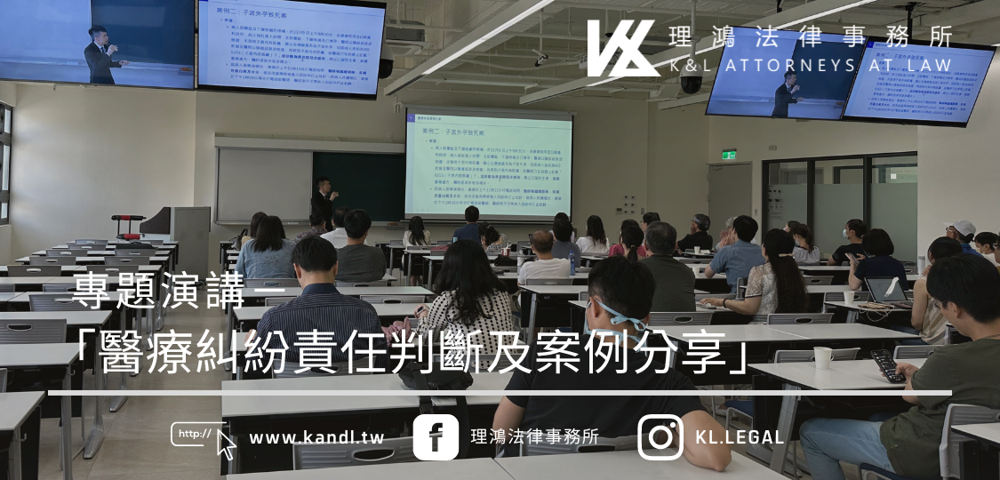

2023.08.02
專題演講「醫療糾紛責任判斷及案例分享」

文 / 郭柏鴻律師
本所郭柏鴻律師近日受邀中信證券忠孝分公司之邀請，辦理醫療糾紛講座，向與會的醫師同仁分享相關法律議題與實務作法。郭律師此次演講以「醫療糾紛責任判斷及案例分享」為主題，希望能讓參與講座的醫師及醫療人員，對此議題有更深入的認識。
醫療糾紛涉及的是醫事人員、醫事機構與病人方之間的爭議，本次郭柏鴻律師分別介紹了醫療糾紛的定義、處理流程、責任判斷，並分享一些實務上曾經發生或本所律師曾處理過的醫療糾紛案例。
實務上，當病人接受醫療行為後，發生傷害或死亡的情況，若病人或家屬認為是由於醫事人員的疏忽或過失所導致，就可能衍生為醫療糾紛。此時醫師就可能要面對相關的民事與刑事法律程序。在刑事責任的部分，可能涉及過失傷害或過失致死等犯罪；而民事責任部分，醫事人員或醫療機構可能需對病人的傷害或死亡結果，負擔相關醫療費用、喪葬費用、工作損失、撫養費，以及精神慰撫金等。
郭律師並針對去年立法院三讀通過、即將施行的《醫療事故預防及爭議處理法》，介紹新法對於醫療糾紛的定義、醫療事故處理流程，以及醫事機構在新法下必須承擔的義務，讓與會的醫界先進能對於新法先有初步了解。
在最重要的責任歸屬判斷方面，郭柏鴻律師透過介紹法院的實務判決案例，分析如何在醫療糾紛中判斷醫療人員的過失，以及法官在處理相關案件時所倚賴的醫療常規、臨床判斷、醫療水準和因果關係等重要因素，並實際分享了數個醫療糾紛案例，讓與會者對於法院判斷醫療過失的重點有更深刻的了解。
透過郭柏鴻律師的分享，讓與會的醫界先進更了解醫療糾紛的複雜性，並對其相關法律程序有更清晰的認識。這個議題涉及醫療專業知識、法律程序和倫理道德等多方面的因素，只有全方位的理解，我們才能進一步降低醫療糾紛的發生，提高醫療服務的品質與安全性，並同時兼顧醫事人員的保障及公眾的醫療權益。
 回上一頁
回上一頁
理鴻法律事務所


- LINE 免費諮詢：@kl.legal
- 電話 +886-2-7753-8667
- 傳真 +886-2-7742-8997
- Email：info@kal.tw
- 地址 104506臺北市中山區南京東路三段217號5樓
© 2024 理鴻法律事務所 KAL Attorneys at Law